Ⅰ 本课目标Objectives
- 01说出驱动模式菜单里的每一个选项，并知道哪些不在这个菜单里
- 02会用 AE 包围、胶片模拟包围、ISO/白平衡包围、对焦包围四类包围
- 03会用 CH / CL 连拍与预拍摄抓拍，理解机械与电子快门的取舍
- 04独立完成 HDR、全景、多重曝光的拍摄与失败排查
- 05会用内置闪光做 TTL 补光，理解慢同步、同步速度与闪光补偿
- X-S20
- 三脚架
- 可拍的人（或玩偶）
- （可选）外接闪光灯
Ⅱ 驱动模式：一个按钮装下五种武器Drive Mode
按下 驱动按钮（拨盘上标 s/C/H 的那颗）弹出驱动模式菜单，用对焦棒上下选项目、左右选细分选项、MENU/OK 确认。
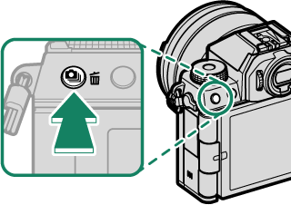
| 菜单项 | 做什么 | 本课位置 |
|---|---|---|
| 单幅画面 | 常规逐张拍摄（默认） | — |
| CH 高速连拍 / CL 低速连拍 | 按住快门连续拍摄 | 第 Ⅳ 节 |
| W ISO BKT / V 白平衡 BKT / s 包围 | 三种包围曝光 | 第 Ⅲ 节 |
| HDR | 曝光 3 次合成一张 | 第 Ⅴ 节 |
| 全景 | 连续摇摄拼成全景 | 第 Ⅵ 节 |
| 多重曝光 | 多张合成，最多 9 次 | 第 Ⅶ 节 |
| 像素偏移多重拍摄 | （机型支持时）可通过多张位移合成提升分辨率 | 第 Ⅸ 节说明 |
注意：包围的细分选项在「拍摄设置」里
驱动菜单里选中的只是哪一类包围；真正的张数、步长、顺序要到「拍摄设置」菜单里设置——AE 连拍设置、胶片模拟包围、对焦包围设定。这两处配合才完整，第 Ⅲ 节会逐项说。
Ⅲ 五种包围：一次快门，多个版本Bracketing
包围的本质是「按一次快门自动产出多张不同设定」。风光用得最多的是 AE 包围与对焦包围，人像偶尔用胶片模拟包围试色。
| 类型 | 每次快门产出 | 细分设置在哪 | 典型用途 |
|---|---|---|---|
| O 自动曝光包围（AE） | 按设定张数拍，第一张用测光值，其余按包围量增减曝 | 拍摄设置 > AE 连拍设置 | 风光高反差备素材，后期合成 HDR |
| X 胶片模拟包围 | 1 张原片 + 按不同胶片模拟生成的副本 | 拍摄设置 > 胶片模拟包围（选 3 种） | 人像挑色彩倾向，不用反复改设置 |
| Y 动态范围包围 | 3 张：DR100% / DR200% / DR400% | — | 判断这台相机在你的场景能保留多少高光 |
| Z 对焦包围 | 一系列焦点逐步前移的照片 | 拍摄设置 > 对焦包围设定（手动 / 自动） | 微距景深合成、前景到远景全清晰 |
| W ISO 包围 / V 白平衡包围 | ±1/3 ~ ±1 的 ISO 三张 / ±1 ~ ±3 的白平衡三张 | 驱动菜单里直接选 | 测试可接受的高感上限 / 白平衡容差 |
A AE 连拍设置：张数、步长、顺序
| 项目 | 可选 | 说明 |
|---|---|---|
| 画面（张数） | 按机型可选项设定 | 一次快门拍多少张 |
| 步骤（步长） | 通常 1/3、2/3、1 EV 等 | 每张之间曝光差多少 |
| 1帧 / 连续 | 1帧 = 逐张按；连续 = 单次连拍跑完 | 上三脚架拍风景用「连续」更快 |
| 序列设置 | 0 → − → + 等顺序 | 决定哪张是你「正常」那张 |
注意：无论包围量设多大，曝光都不会超过测光系统的极限。另外动态范围包围期间感光度会被锁在最低 ISO 640，结束后恢复。
B 对焦包围：手动与自动两套逻辑
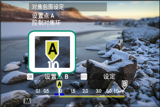
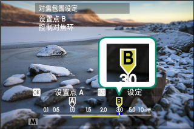
| 模式 | 怎么操作 | 要点 |
|---|---|---|
| 手动 | 设定「画面（张数）」「步骤（每次对焦改变量）」「间隔」后开拍 | 步骤越小变化越细；到无穷远即自动结束，画面数只是上限 |
| 自动 | 先对焦到最近端按 MENU/OK 标记 A，再对焦到最远端按 DISP/BACK 标记 B，然后按快门 | 相机会算出所需张数并显示；可反过来先从最远端开始 |
对焦包围的三条铁律
- 切勿在拍摄过程中变焦——一变焦全部作废。
- 强烈建议三脚架；手持几乎必然失败。
- 拍完后需要在后期做景深合成（叠加）。相机本身只负责拍，不负责合。
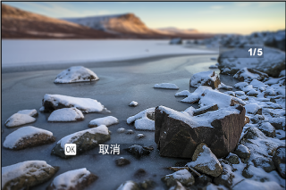
Ⅳ 连拍与预拍摄：抓住按下快门之前Continuous
驱动菜单里选 CH 高速连拍 或 CL 低速连拍，再选画面速率，按住快门即连拍；松开或卡满即结束。
| 要点 | 说明 |
|---|---|
| 高速率的前提 | 只有「拍摄设置 > 快门类型」选为电子快门时才能用最高速率 |
| 每张都重新对焦 | 对焦模式选 AF-C |
| 每张都重新测光 | 把「按钮/拨盘设置 > 快门 AE」设为 OFF |
| 文件编号溢出 | 连拍中编号到 9999 会新建文件夹继续存 |
| 速率会掉 | 张数变多、光线变差、快门变慢时速率可能下降，属正常 |
附 预拍摄（Pre-shot）：把时滞变成优势
「拍摄设置 > 预拍摄」设为开后，半按快门时相机就用电子快门一直拍、一直丢，只在你完全按下快门之前的瞬间开始保留——这是拍飞鸟起飞、孩子笑出来的关键功能。
预拍摄的三个条件
- 只在 CH 高速连拍 + 电子快门 下可用。
- 闪光灯摄影被禁用。
- 电子快门的通病同时存在：移动主体可能畸变、荧光灯下有横纹、无法使用闪光。
附 机械快门 vs 电子快门
| t 机械快门 | s 电子快门 | u 机械 + 电子 | |
|---|---|---|---|
| 声音 | 有 | 静音 | 按环境自动选 |
| 高速连拍 | 受限 | 可用最高速率 | 视情况 |
| 闪光灯 | 可用 | 不可用 | 视情况 |
| 移动主体畸变 | 无 | 可能有 | 视情况 |
| 荧光灯横纹 | 较少 | 可能出现 | 视情况 |
| 长时间曝光降噪 | 有效 | 不起作用 | 视情况 |
电子快门时感光度会被限制在 ISO 160–12800。用静音快门拍人时，请尊重被摄者的肖像权与隐私——声音消失不等于别人不知道你在拍。
Ⅴ HDR：一次快门跑完三次曝光HDR
驱动菜单选 HDR → 选动态范围档位 → 按快门。相机会曝光 3 次并机内合成成一张，高光与阴影细节都保留。
| 选项 | 说明 |
|---|---|
| HDR AUTO | 动态范围自动取 200%–800% 之间的值 |
| HDR200 / 400 / 800 | 固定动态范围 |
| HDR800+ | 相机自行调整以把动态范围拉到最大 |
HDR 的四个副作用（拍之前先知道）
- 照片会被轻微裁切，分辨率略降。
- 曝光期间保持相机稳固；主体移动、光线变化都会毁掉合成。
- 高值档位可能出现斑点（噪点），别一味选 800。
- 闪光灯不闪光；不支持扩展感光度（L/H）。
回放时 HDR 照片带 t 图标，一眼能认出来。它与第 Ⅲ 节的「AE 包围」区别在于：HDR 是机内合成好一张；AE 包围给你多张 RAW/JPEG 留给后期。要交片、要快 → HDR；要保留最大后期空间 → AE 包围。
Ⅵ 全景：摇一圈，别摇歪Panorama
驱动菜单选 全景 → 左右按对焦棒选角度大小 → 向右按选摇摄方向 → 完全按下快门（不用一直按着）→ 按屏幕箭头方向匀速转相机，到引导线末端自动结束。
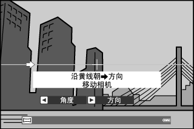
| 维度 | 该怎么做 |
|---|---|
| 姿势 | 双肘抵住身体两侧；用三脚架最好 |
| 速度 | 匀速、缓慢，以小圆圈轨迹转动（不是左右平移） |
| 方向 | 严格沿引导线方向，反向会直接取消拍摄 |
| 水平 | 保持相机与水平线平行或垂直，别一边转一边俯仰 |
| 焦距 | 35 mm 以下（等效 50 mm 以下） |
全景最容易失败的五种场景
- 移动的主体（行人、车流）——拼接会错位
- 贴近相机的物体——视差导致接缝
- 毫无变化的画面（纯天空、草地）——相机找不到拼接点
- 持续运动的景物（波浪、瀑布）
- 亮度剧变的场景——注意「快门 AE」为 ON 时，整张全景的曝光由第一张画面决定，所以起手第一格要选亮度适中的位置
回放全景：全画面显示时向下按对焦棒开始滚动播放，左右按对焦棒可手动滚动，后指令拨盘可放大缩小。若在完成前再次全按快门，拍摄会提前结束且可能不保存。
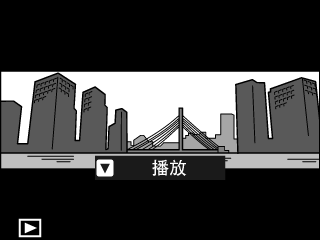
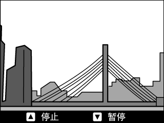
Ⅶ 多重曝光：一加一大于二Multiple Exposure
驱动菜单选 多重曝光 → 选合成模式 → 拍第一张 → MENU/OK 继续 → 拍第二张 → DISP/BACK 结束合成。最多叠加 9 次曝光。
| 合成模式 | 算法 | 风光玩法 |
|---|---|---|
| 叠加 | 曝光直接相加 | 月亮叠在建筑上；需相应降低曝光补偿 |
| 平均 | 自动优化整体曝光 | 同构图多次曝光（云、人流），背景曝光最稳 |
| 明亮 | 每个位置取最亮像素 | 星轨、烟花叠加、光绘 |
| 暗 | 每个位置取最暗像素 | 去掉画面的亮部元素，做诡异效果 |
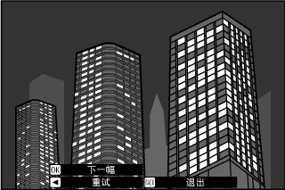
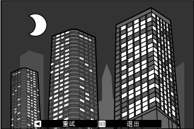
按键规则：拍完一张按 MENU/OK 进入下一张；向左按对焦棒可以回退重拍上一张；DISP/BACK 结束并用当前素材合成。上一张的照片会以半透明方式叠在取景画面上当构图参考——这是多重曝光最实用的部分。
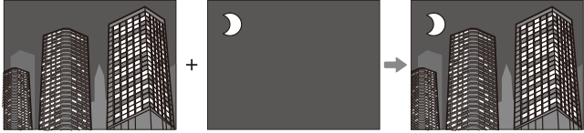
Ⅷ 闪光：人像补光的最小可用方案Flash
X-S20 的内置闪光灯要手动升起：滑动机身上的 N 杆，闪光灯弹出。升不起来就不会闪——这是最常见的「闪光灯坏了」误会。
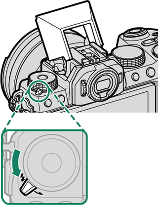
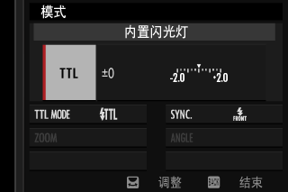
A 闪光控制模式与输出
| 项目 | 选项 | 含义 |
|---|---|---|
| 闪光控制模式 | TTL | 自动测光决定输出，可再调闪光灯补偿——补光首选 |
| M | 手动定输出，1/1 至 1/64；稳定可复现，但要试拍 | |
| C 主闪光灯 | 把机顶灯当指令器控制离机闪光（影棚系统） | |
| D 关 | 闪光灯不闪光 | |
| 闪光灯补偿 / 输出 | 按上项不同而变 | TTL 下调补偿；M 下调输出比值 |
B 闪光灯模式（TTL 下）
| 模式 | 行为 | 人像用途 |
|---|---|---|
| E 自动闪光 | 需要时才闪，亮度自动调整；半按时显示 p 图标=会闪 | 日常补光，最省心 |
| F 标准 | 每次都闪（充满电才闪） | 逆光人像强制补光 |
| G 慢同步 | 闪光 + 慢速快门组合 | 夜景人像：既照亮人，又保留背景灯光 |
C 同步与红眼
| 项目 | 选项 | 说明 |
|---|---|---|
| 同步 | H 第一幕（默认）/ I 第二幕 | 第二幕在快门关闭前闪，拖影会出现在主体后面，更自然 |
| 红眼修正 | 闪光灯 / 关 | 需在「闪光设置 > 红眼修正」开启；仅 TTL 下有效 |
| 同步速度 | 闪光灯与 1/180 秒或更慢的快门同步。S / M 档用闪光时，快门必须慢于 1/180 s | |
闪光人像：四个立刻能用的原则
- 白天逆光补光：TTL + 标准模式 + 闪光补偿 −1/3 ~ −2/3 EV，让人脸亮起来又不显「打闪光」。
- 夜景人像：TTL + 慢同步，快门放慢到 1/15–1/30 s，人物与背景同时有光。
- 不要用电子快门——闪光灯不工作。
- 镜头可能挡出阴影：长镜头或遮光罩会在画面下缘投影，拍前用广角端试一张。
闪光设置菜单里还有几项值得知道：TTL-锁定模式（锁定上一次闪光 / 锁定计量闪光，让多张效果一致）、LED 灯光设置（外接灯的常亮灯作反射光或 AF 辅助）、控制单元设置（光学无线分组 Gr A/B/C）。这些在你有外接闪光灯时再深入。
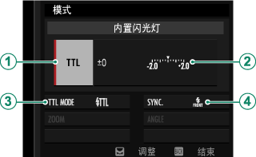
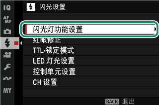
两条安全提示
- 切勿使用在相机热靴上施加超过 300 V 电压的第三方闪光灯，会损坏机身。
- TTL 模式下每次拍照闪光灯可能多次预闪，拍完前别动相机。
Ⅸ 迁移提示From Sony / Canon
进阶技法，和索尼 / 佳能最不一样的 5 点
- 一切都在「驱动按钮」里：包围、连拍、HDR、全景、多重曝光共用同一个入口。索尼是分散在连拍拨盘 + 菜单里，佳能是 DRIVE 键 + HDR 菜单。
- 包围的细分在另一个菜单：驱动菜单选类型，「拍摄设置」定张数步长——两处配合，第一次用容易只改了其一。
- HDR 是机内合成的一张，带 t 图标；索尼的 HDR 也机内合成，但很多机型只给 3 档、没有 800+。
- 预拍摄绑定电子快门 + CH：这是富士少数比索尼更「运动向」的功能，抓飞鸟起飞很好用。
- 内置闪光要手动弹起：索尼多数机型内置灯是按钮弹出或没有；富士靠滑动 N 杆，不弹就不闪。
Ⅹ 课后练习Exercise
-
01
简答：想在同一个高反差风光场景拿到 3 张不同曝光的素材留给后期合成，用哪个功能？张数与步长在哪里设？
参考答案
用自动曝光包围（AE 包围）：驱动菜单里选「s 包围 > O 自动曝光包围」，然后到「拍摄设置 > AE 连拍设置」设定画面（张数）、步骤（步长）、1帧/连续与序列设置。
-
02
判断：把「预拍摄」设为开，在任何驱动模式下都能拍到按下快门之前的画面。
参考答案
错误。预拍摄仅当驱动模式为 CH 高速连拍且快门类型选为电子快门时可用；且此时禁用闪光灯摄影。
-
03
选择：夜晚在街头拍人像，希望人物被照亮同时背景灯光不过暗，闪光设置怎么选？
参考答案
升起内置闪光灯 → TTL 闪光控制模式 → 闪光灯模式选 G 慢同步，并让快门慢到 1/15–1/30 s 左右（S/M 档须慢于 1/180 s）；必要时微调闪光补偿。
实拍小任务（风光向，一次做两件）
上三脚架，对同一场景：① 用 HDR400 拍一张；② 用 AE 包围拍一组 3 张。回来后对比「机内合成」与「三张素材」的差别，感受后期空间。再加一个 180° 的全景，练匀速摇摄。
Ⅺ 出处与延伸Sources
- 本课对应的官方说明书页面（主教材）
- 包围 — ISO BKT、白平衡 BKT、AE 包围、胶片模拟包围、动态范围包围、对焦包围（手动/自动）
- 连拍（连续拍摄模式） — CH/CL、对焦与曝光的连拍行为
- HDR — HDR AUTO/200/400/800/800+ 与使用限制
- 全景照片 — 拍摄流程、获得最佳效果的要点、全景回放
- 多重曝光 — 叠加/平均/明亮/暗 四种合成模式与操作
- 闪光灯摄影 · 闪光设置（静态摄影） — 内置灯升起、TTL/M、闪光灯模式、同步、红眼修正、TTL 锁定
- 版权说明
- 本课插图均取自 FUJIFILM 官方在线说明书，© FUJIFILM Corporation，仅用于个人学习。
学习提醒
到这一课，你手上的「拍摄手段」已经齐了。下一课转向画质与风格：胶片模拟的每一种配方、动态范围与 D 范围优先级、白平衡微调、色调曲线与颗粒效果——把 X-S20 最大的特色吃干。